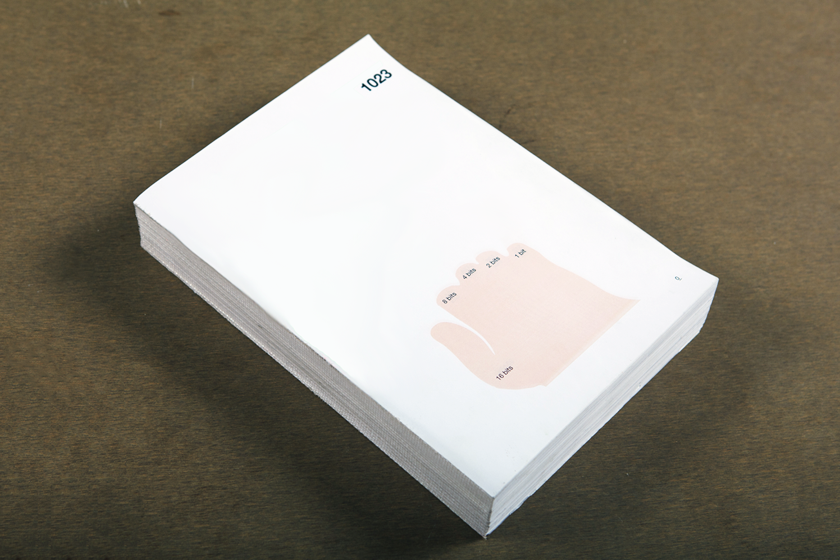
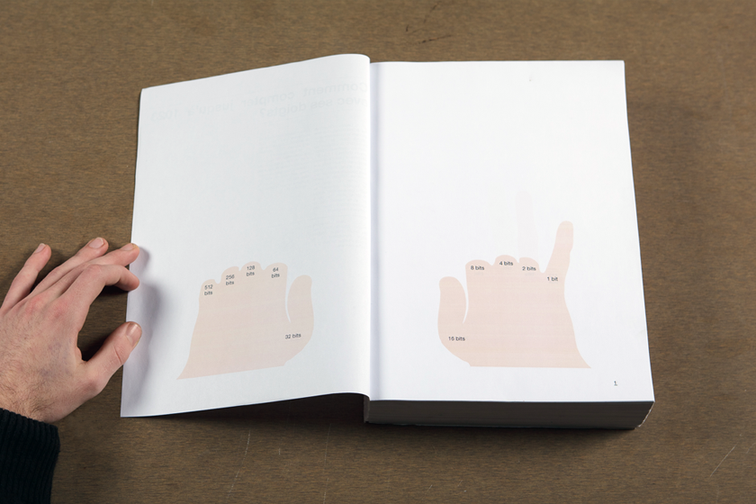
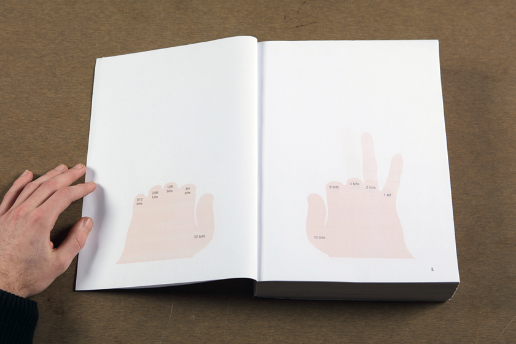
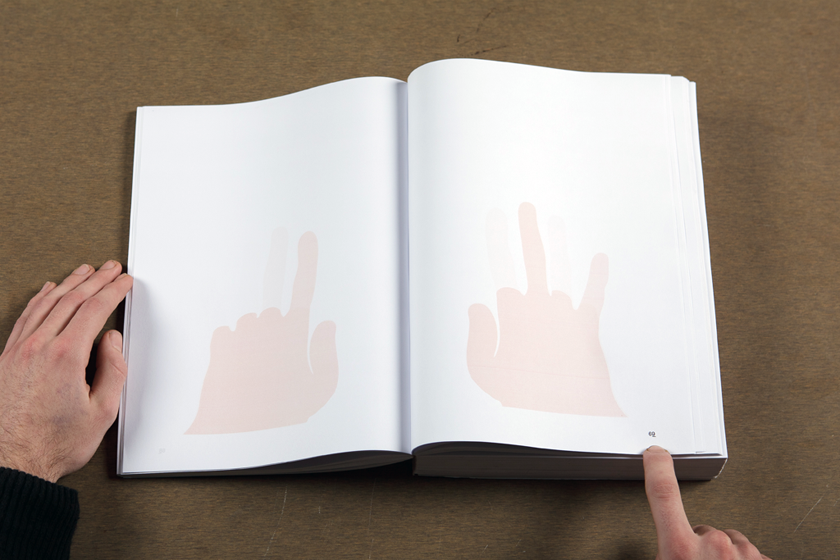
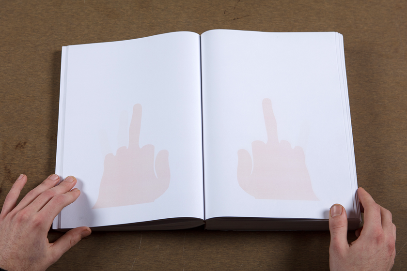
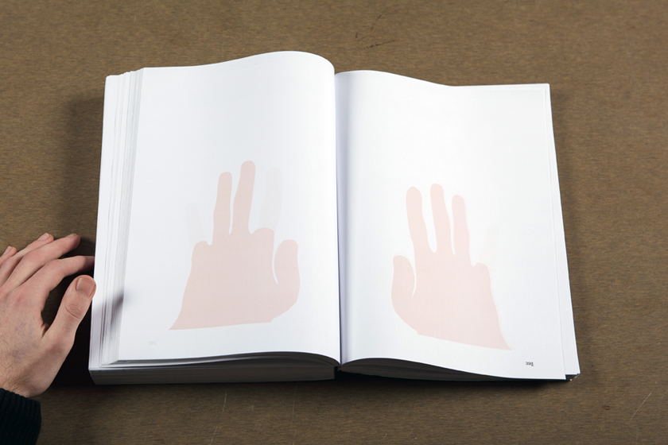

Gaston
Gouron
About
Contact
Links
Diary
1023 (binary hands)
2009
Finger counting to 1023 using binary system on both hands. Every double-spread indicates a decimal number through both hands.
Animation & book
extract from 15:52' video
Index
> Next project
< Previous project
     